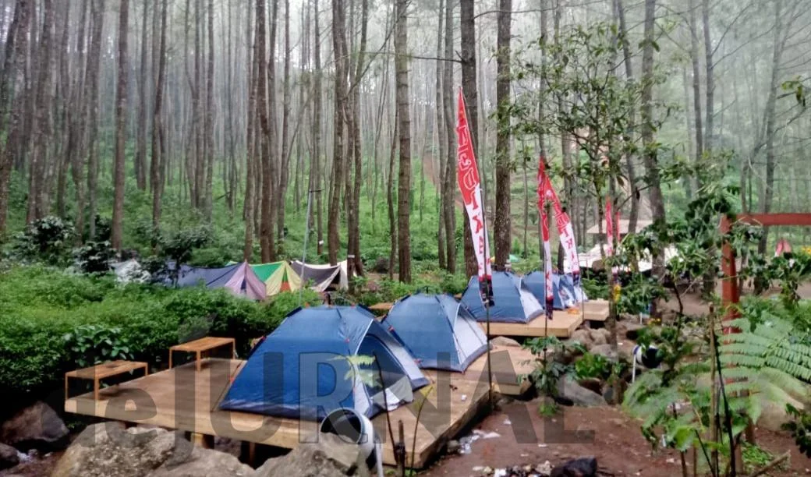

Batu Lempar
Objek wisata alam Batu Lempar berada di Desa Lebak Agung Kecamatan Karangpawitan Kabupaten Garut. Lokasinya tidak jauh dari situs bersejarah Makam Godog.
Dari Garut Kota, wisatawan hanya memerlukan waktu sekitar 30 menit untuk sampai ke objek wisata alam Batu Lempar.
Objek wisata alam Batu Lempar merupakan objek wisata yang dikelola oleh desa dan masyarakat sekitar. Dengan demikian, tiket masuknya cukup terjangkau.
Tiket masuk objek wisata alam Batu Lempar sebesar Rp 5.000 per orang plus biaya parkir sebesar Rp 5.000 per kendaraan.
Di objek wisata alam Batu Lempar itu pengunjung bisa menikmati fasilitas gazebo, tempat lesehan, warung, musala, dan toilet.
“Sekarang ada gazebo 2 dan tempat lesehan 6. Ini bantuan dari pemda oleh bupati,” kata salah seorang pengelola Siti Masitoh kepada Radartasik.id pada Jumat, 30 Juni 2023.
Selain untuk rekreasi, objek wisata alam Batu Lempar juga bisa dijadikan tempat camping. Suasana alam yang asri, pohon-pohon pinus yang rindang, dan aliran sungai akan memanjakan wisatawan yang berkemah.
